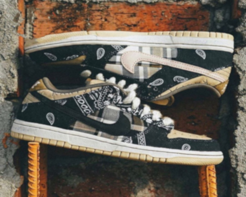
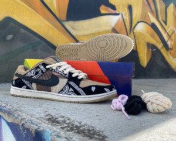

1985 foi sem dúvidas o ano mais importante na história dos tênis da Nike. É o nascimento do Air Jordan 1, afinal de contas. Mas nos corredores da empresa do Oregon, então com 10 anos de idade, outros projetos estavam em gestação. No fim daquele ano foi apresentado oficialmente o Nike Dunk. Tratava-se de uma silhueta pensada para o basquete com várias características de design em comum com o AJ1 e com o Air Force 1, lançado em 1982.


O tênis foi usado por várias equipes do basquete universitário, como Kentucky, Syracuse, Georgetown, Michigan e Arizona (nomes que você vê hoje em dia associados às colorways originais do modelo). Mas como não era um Jordan, não vingou.
Foi começo dos anos 2000 que o Dunk começou a sair da geladeira, com uma versão lançada pelo departamento de skateboarding da Nike. O SB Dunk foi um enorme sucesso e ganhou várias colaborações (o que era novidade na época) que impulsionaram o que conhecemos hoje como “cultura sneaker”. Os mais famosos foram o “Black Cement”, feito com a Supreme, de 2002; o “Tiffany”, com a Diamond Supply Co., de 2005; e o “Pigeon”, com a Staple, no mesmo ano (sim, esse é aquele do pombo).
Mas como todo o estilo skate, o SB Dunk perdeu fôlego e deu uma caída no final da década. Ele tinha virado comum demais.